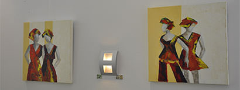

Mijn naam is Carla van Rijn. Ik ben in 1962 geboren in de Randstad. Aan de hand van mijn mentor Joop de Chene schilder ik met paletmes en acrylverf op doek.
Mijn werk is vrolijk en kleurrijk. De schilderijen bestaan dan ook uit meerdere lagen en uitbundige kleuren acryl.
In mijn portfolio vind je mijn laatste werken. Heb je interesse in het aanschaffen van mijn werk of wil je een werk in opdracht laten maken, neem dan contact met mij op.
Schilderen gaat bij mij om perfectie en gevoel
Aan de hand van Joop de Chene, die haar sporen in de kunstwereld heeft verdiend, ging voor mij een nieuwe creatieve wereld open.
Mijn doeken zijn van diverse afmetingen. Ik schilder nu voornamelijk honden, schapen en personen, maar sta open voor nieuwe uitdagingen.
De vorm van mens en dier intrigeren me. Je kunt er gewoon naar kijken maar er ook bij wegdromen.
Huidige expositie

Oktober 2012 - Eind 2013
In mijn geboorte dorp een doorlopende, wisselende expositie tot aan het eind van 2013. De expositie is te bezichtigen op aanvraag of tijdens feesten en partijen.